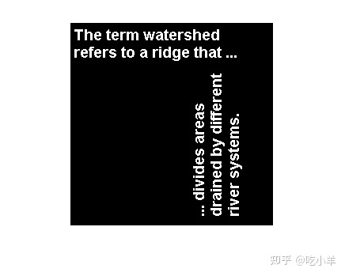
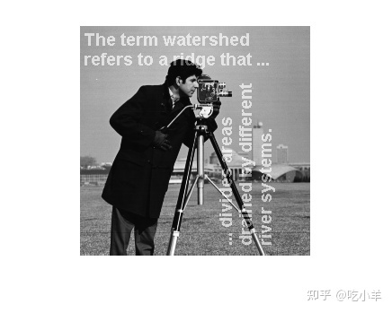

Home
此示例显示如何使用roifilt2函数指定过滤器，来过滤感兴趣区域 (ROI) 。roifilt2使您能够指定自己的函数以对 ROI 进行操作。本示例使用imadjust函数使图像的某些部分变亮。
将图像读入工作区并显示。
I = imread('cameraman.tif');
figure
imshow(I)
创建蒙版图像。本示例使用文本的二进制图像作为掩蒙版图像。所有像素值1定义了感兴趣的区域。该示例首先要裁剪图像，因为蒙版图像必须与要过滤的图像大小相同。
BW = imread('text.png');
mask = BW(1:256,1:256);
figure
imshow(mask)

创建要用作过滤器的函数。
f = @(x) imadjust(x,[],[],0.3);
过滤 ROI，指定要过滤的图像、定义 ROI 的蒙版以及要使用的过滤器。
I2 = roifilt2(I,mask,f);
显示结果。
figure imshow(I2)

======================================================================
我的测试结果及程序
下面是我测试的代码：

注：本文根据MATLAB官网内容修改而成。